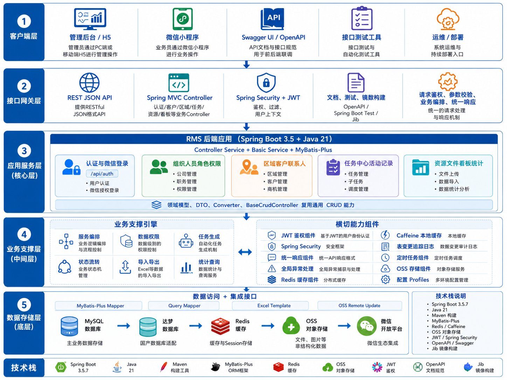

📋 重要提示
本文档是 Markdown 基础教程，由 AI 生成初稿。你的角色是审核、修改——确认内容无误后，这份 MD 将作为过程文件，用于生成各种给人看的最终文件（PPT、HTML、WORD、图片等）。它是整个内容生产流程的核心中间产物。
Markdown 是一种轻量级标记语言，核心理念是：用纯文本快速写出格式化的文档。掌握它，能让你的 AI 办公效率提升数倍。
第一部分：什么是 Markdown（MD）格式
1.1 一句话定义
Markdown 是一种轻量级标记语言，它的核心理念是：用纯文本快速写出格式化的文档。
你只需要在纯文本中输入一些简单的标记符号（比如 #、*、- ），就能让文字变成标题、加粗、列表，甚至插入图片和代码。这些纯文本文件保存为 .md 或 .markdown 后缀，就是 Markdown 文件。
1.2 常见语法速查
以下是 Markdown 最常用的语法，每个都配有「源码」和「渲染效果」对比：
标题
# 一级标题
## 二级标题
### 三级标题渲染效果：
一级标题
二级标题
三级标题
加粗与斜体
**这是加粗文字**
*这是斜体文字*渲染效果：
这是加粗文字
这是斜体文字
列表
- 无序列表项 1
- 无序列表项 2
- 嵌套列表项
1. 有序列表项 1
2. 有序列表项 2渲染效果：
- 无序列表项 1
- 无序列表项 2
- 嵌套列表项
- 有序列表项 1
- 有序列表项 2
链接与图片
[点击访问百度](https://www.baidu.com)
渲染效果：
（图片示例需替换为实际图片地址）
代码块
这是一行普通代码：`console.log("Hello")`
```javascript
// 这是多行代码块
function sayHello() {
console.log("Hello, Markdown!");
}
```渲染效果：
这是一行普通代码：console.log("Hello")
// 这是多行代码块
function sayHello() {
console.log("Hello, Markdown!");
}表格
| 姓名 | 年龄 | 城市 |
|------|------|------|
| 张三 | 28 | 北京 |
| 李四 | 32 | 上海 |渲染效果：
| 姓名 | 年龄 | 城市 |
|---|---|---|
| 张三 | 28 | 北京 |
| 李四 | 32 | 上海 |
1.3 Markdown 与 HTML 的关系
Markdown 是 HTML 的「快捷写法」，MD 可以轻松转换为 HTML，但比 HTML 简单很多。
| Markdown | HTML | 说明 |
|---|---|---|
# 标题 |
<h1>标题</h1> |
Markdown 是 HTML 的「快捷写法」 |
**加粗** |
<strong>加粗</strong> |
同样的效果，MD 更简单 |
- 列表 |
<ul><li>列表</li></ul> |
MD 大幅减少了代码量 |
核心关系：
- Markdown 可以轻松转换为 HTML，就像「手写便签」可以交给印刷厂印成精美海报。
- MD 比 HTML 简单很多，你不需要懂任何编程知识，几分钟就能上手。
- 最终效果一样：无论是 MD 还是 HTML，渲染出来的页面效果几乎相同。
第二部分：Markdown 的常见应用场景
2.1 会议纪要及方案
需求文档、会议纪要、技术方案等办公场景，用 Markdown 都能快速搭建清晰的结构：
# 项目周会纪要与方案
**时间**：2025-06-24 14:00
**参与人**：张三、李四、王五
## 一、需求概述
当前系统仅支持邮箱登录，用户反馈需要更便捷的登录方式。
## 二、会议决议
1. 支持手机号 + 验证码登录
2. 支持微信一键登录
3. 确定下周三进行内部测试
## 三、优化方案
1. 引入缓存机制，提升性能
2. 数据库读写分离
3. 异步任务队列
## 四、待办任务
| 任务 | 负责人 | 截止日期 |
|------|--------|----------|
| 完成 API 接口开发 | 张三 | 2025-06-28 |
| 编写测试用例 | 李四 | 2025-06-30 |
| 用户调研报告 | 王五 | 2025-06-27 |
## 五、预期效果
- QPS 提升 50%
- 响应时间降低 30%2.2 整理 PPT 内容提示词
在让 AI 生成 PPT 之前，先用 Markdown 梳理好内容结构，再交给 AI 处理。以下是完整提示词示例（仅展示前 15 行，点击展开查看全部）：
# 上海新华传媒 · 系统性变革与中台建设落地方案 — PPT 生成提示词全集
> **用途**：汇报用 PPT 幻灯片，共 25 页
> **画幅**：16:9 横版
> **风格**：专业商务汇报风格，深蓝主色调(#1A3C5E)，白色背景为主，卡片式布局
---
## 全局样式设定
```
所有幻灯片遵循以下统一风格：
- 主色调：深蓝 #1A3C5E，辅助色 #2E7D32(绿) / #F57F17(金) / #C2185B(粉)
- 字体：标题 28pt 加粗，正文 16-18pt，表格 12-14pt
- 背景：白色为主，关键页可用浅蓝渐变 #E3F2FD→white
- 左上角放置小logo或方案名称缩写
- 右下角页码
- 卡片式内容：白色圆角卡片+微阴影，信息层级清晰
- 表格用浅灰表头(#1A3C5E白字)，交替行色
- P0=红色标签，P1=橙色标签，P2=灰色标签
- 🆕新品=绿标签，🔨待建=紫标签，➡️沿用=蓝标签，⬆️升级=橙标签
```
---
## 第 1 页 · 封面
**布局**：居中排版，大气留白
**提示词**：
```
生成一张16:9的PPT封面。深蓝色渐变背景(#0D2B4A→#1A3C5E)。
居中排列：
- 第一行：白色大字"上海新华传媒连锁有限公司"(36pt)
- 第二行：金色大字"系统性变革与中台建设落地方案"(44pt 加粗 #FFC107)
- 第三行：白色细体"精兵前台 + 能力中台 + 精简后台"(24pt)
- 分割线(金色短线)
- 第四行：白色小字"北京中启 · 2026年5月"(16pt)
右下角：白色小字"从'部门各自为战'到'需求-响应-交付-复盘'闭环"
风格：简洁大气，咨询公司汇报风格，无多余装饰。
```
---
## 第 2 页 · 执行摘要（TL;DR）
**布局**：左侧文字+右侧核心数据卡片
**提示词**：
```
生成一张16:9的PPT内容页，白色背景。顶部深蓝标题栏"执行摘要"。
内容分为左右两栏(6:4)：
左栏(60%)，4个要点，每点前有深蓝色圆形图标编号：
① 核心目标：建设四层架构(客户→前端→中台→后台)，组建8个能力中心，
赋能B端业务员"带着能力去见客户"
② 关键决策：优先建设P0五大中心(商品加工/会员B端/订单/数据/阅读服务中台)
+ERP升级+TOB CRM前端，共4新品+2待建+1沿用+1待调研
③ 变革策略：小步快走。Y1建底座→Y2补能力→Y3扩生态
④ 行业定位：图书行业首创"实物+非实物统一商品模型+配供枢纽+采购转型"
右栏(40%)，3个纵向卡片：
- "B端响应提速50%+" (深蓝底白字)
- "阅读服务产品化·标准包复用率>60%" (绿色底白字)
- "库存周转降低30%" (金色底白字)
卡片底部小字："投资回收期约1-1.5年"
```
---
## 第 3 页 · 甲方需求对齐
**布局**：两栏对照表
**提示词**：
```
生成一张16:9的PPT内容页，白色背景。顶部深蓝标题栏"甲方需求对齐——逐条回应汇报稿核心诉求"。
内容为一个6行3列对照表：
表头(深蓝底白字)：甲方汇报稿核心诉求 | 本方案对应章节 | 落地方式
行1：不是部门调整，是经营能力重构 | 组织变革 | 精兵前台+能力中台+精简后台
行2：三大中台是能力平台 | 中台能力 | 供应链/阅读服务(升格)/数据运营
行3：前台分基础服务+兵团式服务 | 前台重构 | 双团队模式，考核对标
行4：分级采购、折扣授权、仓配协同 | 供应链中台 | C5：三级采购引擎+折扣授权+供应商治理
行5：阅读服务产品化、资源库 | 阅读服务中台 | C4升格：5子模块+4大标准包+6大行业方案
行6：五大主数据、业务协同 | 数据运营中台 | C6：主数据治理+业务协同+业财对齐
行7：需求-响应-交付-复盘闭环 | 端到端流程 | 四条核心业务流程
行8：系统性变革风险 | 风险管控 | 组织/数据/业务/技术四类风险
每行用极浅的交替背景色(白/浅灰)区分。
右侧第一列关键词用深蓝加粗。
```
---
## 第 4 页 · 三大中台映射
**布局**：三列卡片
**提示词**：
```
生成一张16:9的PPT内容页。顶部标题"甲方三大中台 vs 本方案能力中心映射"。
内容为横向三列大卡片，每列顶部有颜色条：
左列(供应链中台·绿色#2E7D32)：
- 标题：供应链中台
- 副标题：资源组织与交付保障平台
- 对应中心：C1全渠道商品加工中心(🆕P0)+ C5订单中心(🔨P0)+ 后台ERP升级(⬆️P0)
- 关键能力：分级采购引擎/折扣授权/配供枢纽/供应商治理/返利结算/非实物资源管理
中列(阅读服务中台·金色#F57F17，加浅金边框突出)：
- 标题：阅读服务中台 ⬅️ 升格为独立中台
- 副标题：文化产品中央厨房、资源整合平台
- 对应中心：C4阅读服务产品中台(🔨P0)
- 关键能力：4大标准产品包/专家资源库/6大行业方案/素材中心/复盘沉淀
右列(数据运营中台·紫色#6A1B9A)：
- 标题：数据运营中台
- 副标题：主数据+分析+协同
- 对应中心：C6数据中心(🆕P0)+ C7 AI中心(🆕P2)+ C8其他(❓P2)
- 关键能力：五大主数据治理/业务协同/业财对齐/经营分析/经理驾驶舱
每张卡片底部用小字标注人员配置和人员来源。
```
---
## 第 5 页 · 组织变革总览
**布局**：三栏组织架构图 + 闭环流程条
**提示词**：
```
生成一张16:9的PPT内容页。顶部标题"系统性变革：从'部门各自为战'到'精兵前台、能力中台、精简后台'"。
内容为左中右三栏+右侧流程条：
左栏(33%)·浅蓝背景#E3F2FD·"精兵前台"：
- 基础服务团队：门店店员/店长(零售值守)
考核：坪效、客流、客单价
- 兵团式服务团队：团购客户经理/政企客户经理/馆配业务员/阅读服务经理
考核：赢单率、复购率、客户满意度
- 支持一人多角色：门店店长可兼B端商机采集
中栏(34%)·浅绿背景#E8F5E9·"能力中台"：
- 供应链中台：商品加工中心+订单中心+供应商治理
- 阅读服务中台(升格)：产品库+资源库+方案引擎+素材中心+复盘
- 数据运营中台：主数据治理+经营分析+业务协同+业财对齐
右栏(16%)·浅粉背景#FCE4EC·"精简后台"：
- 财务(不动)/人力/行政/合规风控
- 管住底线，不拖业务后腿
最右侧(17%)·竖向流程条(浅蓝底，箭头串联)：
需求提出(红点)→中台响应(橙点)→前台执行(绿点)→交付保障(蓝点)→共同复盘(紫点)
底部小字标注：前台负责经营结果 / 中台负责能力沉淀 / 后台负责风险边界
整体用浅色竖线分隔三栏。
```
---
## 第 6 页 · 阅读服务中台岗位配置（重点页）
**布局**：四列角色卡片
**提示词**：
```
生成一张16:9的PPT内容页。顶部标题"阅读服务中台 —— 文化产品中央厨房 · 岗位配置与人员下沉方案"。
副标题"甲方汇报稿1/3篇幅的核心，从'卖书'到'文化服务解决方案'的战略转型抓手"。
内容为4列卡片，每列一个角色：
卡片1(金色顶条)·阅读服务产品经理(2-3人)：
- 来源：销售/市场/馆配骨干下沉
- 职责：设计标准产品包、定价、迭代
- 考核：产品包复用率、新产品包上线速度
卡片2·行业方案策划经理(2人，分金融企业/公共文化方向)：
- 来源：馆配/团购业务骨干转岗
- 职责：针对6大行业设计差异化解决方案
- 考核：方案交付周期、客户满意度
卡片3·内容资源经理(1人)：
- 来源：市场部+外部招募+AIGC工具支持
- 职责：管理作家库/讲师库/专家库/书单库/案例库
- 考核：资源覆盖率、资源匹配效率
卡片4·复盘运营经理(1人)：
- 来源：业务部门+市场部+数据分析
- 职责：项目复盘、报价模型沉淀、成本模型优化
- 考核：案例归档率、报价模型准确度
底部横幅：过渡原则——①薪酬不降(6个月保护期) ②能力培训先行 ③双轨并行 ④利益闭环
```
---
## 第 7 页 · 供应链三大重构方向
**布局**：三列卡片 + 底部行业定位
**提示词**：
```
生成一张16:9的PPT内容页。顶部标题"供应链中台三大重构方向——对标现有采配管理"。
内容为三列大卡片，每列顶部有彩色横条：
左列(绿色)·非实物资源模块化：
- 甲方现状：仅管理纸质图书/多元实物商品
- 目标：电子书/有声书/数据库/知识服务产品纳入统一商品模型
- 对应：C1商品加工中心
- 技术基础：总局项目正在完善相关能力
中列(蓝色)·配供枢纽化：
- 甲方现状：老CS架构ERP，不支持外部系统实时调用
- 目标：新一代ERP开放API，前端系统通过标准接口调用采供中台能力
- 对应：C5订单中心
- 技术基础：湖南双中台/皖新双中台已验证
右列(橙色)·采购职能转型：
- 甲方现状：采购员手工下单，按供应商被动执行
- 目标：分级采购引擎(基础/项目/战略)+供应商治理+返利结算闭环
- 对应：C5订单中心+后台ERP升级
- 技术基础：新一代ERP架构原生支持微服务调用
底部加一条金色横幅：
"行业定位：图书行业尚无完整的'三位一体'落地案例——既是风险(无对标)，也是价值(行业首创)"
```
---
## 第 8 页 · 核心架构图
**布局**：全页架构图（直接放入之前生成的架构图）
**提示词**：
```
生成一张16:9的PPT内容页。顶部标题"核心架构总图——四层架构×8个能力中心"。
内容区域放置完整的六层企业架构图：
第0层(顶部窄条·浅灰)：组织架构——精兵前台|能力中台|精简后台|需求→响应→交付→复盘
第1层(浅蓝)：客户群体——馆配客户|B端客户|C端客户|供应商|教育客户
第2层(浅橙)：前端触点——馆配&TOB营销|销售前端|教材前端|内部/供应商端
第3层主区域(浅绿)：中台能力层(三大中台×8中心)
- 供应链中台(34%)：C1商品加工🆕P0 + C5订单中心🔨P0
- 阅读服务中台(34%，金色虚线边框)：C4阅读服务产品中台🔨P0(升格) + C2会员B端🆕P0
- 数据运营中台(32%)：C3会员C端➡️P2 + C6数据中心🆕P0 + C7 AI🆕P2 + C8其他❓P2
第4层(浅粉)：后台升级——ERP总部⬆️|物流系统⬆️|教材ERP⏸️
底部(浅蓝)：战略区——Y1建底座|Y2补能力|Y3扩生态+关键角色
右下角图例：🆕新品(绿)🔨待建(紫)➡️沿用(蓝)⬆️升级(橙)❓待调研(灰)
```
---
## 第 9 页 · C1 全渠道商品加工中心
**布局**：左侧功能列表 + 右侧非实物资源分类表
**提示词**：
```
生成一张16:9的PPT内容页。顶部标题"C1 全渠道商品加工中心 🆕新品 · P0"。
副标题"全集团统一商品数据加工与主数据管理中心——所有中心的数据底座"
左栏(50%)，功能列表，用圆点图标：
· 实物商品信息加工：ISBN/书名/作者/出版社/版次/装帧/定价/分类
· 非实物资源加工🆕：数字资源(电子书/有声书/数据库)/知识服务/权益类
· 电商内容加工：商品图片/内容简介/试读/视频
· MARC数据加工：图书馆编目格式
· AI辅助加工：自动采集/智能分类/内容生成
· 客商主数据+组织架构主数据
· 数据分发："一次加工，多点使用"
右栏(50%)，4行表格"非实物资源模块化"：
表头：资源类型|示例|商品模型要素|目标状态
行1：数字资源|电子书/有声书/在线课程|资源ID+元数据+授权模式+定价+DRM|统一商品编码
行2：数据库产品|CNKI/万方/读秀|产品ID+学科+访问方式+订阅周期|标准SKU
行3：知识服务|阅读服务包/文化活动|服务ID+内容清单+讲师+时长+定价|实物+非实物统一报价
行4：权益类|会员卡/储值卡/优惠券|权益ID+类型+面值+有效期|纳入统一模型
```
---
## 第 10 页 · C5 订单中心
**布局**：六大模块卡片 + 底部技术基础标注
**提示词**：
```
生成一张16:9的PPT内容页。顶部标题"C5 订单中心——配供枢纽+采购转型+资源组织 🔨待建 · P0"。
副标题"从老CS架构ERP到新一代微服务采购中台，已在湖南/皖新双中台验证"
内容为2行×3列共6张功能卡片，每张卡片有小图标：
卡片1·跨系统库存查询：门店/仓库/在途/供应商四层库存实时可视(≤5分钟延迟)
卡片2·分级采购引擎：基础采购(标准流程)|项目采购(快速通道)|战略采购(资源锁定)
按金额分级审批(<10万经理/10-50万总监/>50万副总)
卡片3·折扣授权引擎：按客户类型/等级/金额分级授权，特采绿色通道
卡片4·供应商标签与治理：准入/评价/分级/淘汰，按类型打标签(馆配/政企/活动/文创)
卡片5·返利结算与利益闭环：返利自动归属前台团队，与绩效考核挂钩
卡片6·仓配最优路径：基于客户位置+库存分布+时效要求自动推荐
底部蓝色横幅，白色小字：
"技术基础：新一代ERP架构原生支持微服务调用→外部系统通过标准API实时调用采供中台能力
行业对标：湖南双中台+皖新双中台已涉及供应链产品升级→配供枢纽模式已验证"
```
---
## 第 11 页 · C4 阅读服务产品中台（重点页）
**布局**：五大模块卡片 + 四大产品包格子
**提示词**：
```
生成一张16:9的PPT内容页。顶部标题"C4 阅读服务产品中台 🔨待建 · P0 ⬅️ 升格为独立中台"。
副标题"文化产品中央厨房——从'一次性项目'到'可复制标准产品'，从'卖书'到'文化服务解决方案'"
上半部分(40%高度)：四大标准产品包，4列并排卡片：
· 政企文化包：职工书屋+读书会+专家讲座+文化沙龙(按人数/场次定价)
· 亲子阅读包：分级书单+亲子活动+阅读指导+打卡工具(按家庭数/周期定价)
· 企业阅读包：企业读书角+高管书单+员工阅读计划+文化内训(按企业规模定价)
· 公共文化服务包：阅读推广活动+讲师匹配+书目配送+活动执行(项目制招标定价)
下半部分(60%高度)：五大子模块，2行布局：
上排3个：产品库(4大标准包)|资源库(作家/讲师/书单/案例)|方案引擎(金融/企业/高校/图书馆/社区/少儿)
下排2个：素材中心(文案/海报/短视频+AIGC辅助)+复盘沉淀(报价归档/成本优化/案例更新)
中间放一个大字："单个方案从策划到交付：2-3周→3天内"
整体用浅金色边框(#FFC107 虚线)包裹，突出独立中台地位。
底部小字标注人员配置。
```
---
## 第 12 页 · C2/C6 会员B端 + 数据中心
**布局**：左右各一张大卡片
**提示词**：
```
生成一张16:9的PPT内容页。白色背景。左右并列两张卡片，各占48%宽度：
左卡片(C2)·深蓝顶条·"C2 会员中心B端 🆕新品 · P0 · 业务员移动赋能"：
· 团供区域网格管理
· 客户360°画像(组织/偏好/决策链)
· 移动端拜访打卡(时间/地点/内容/照片/下一步计划)
· 商品/营销资料移动推送
· 销售线索与商机采集
· 订单跟踪/评分查询快速服务
· 营销活动配合宣传
底部标注："核心价值：让业务员'带着武装到牙齿的工具去见客户'"
右卡片(C6)·绿色顶条·"C6 数据中心 🆕新品 · P0 · 数据运营中台核心"：
· 五大主数据治理(书目ISBN唯一/客户ID统一/库存实时/销售全渠道/经营标准化)
· 业务协同工作台(任务流转+责任确认+节点跟踪+结果复盘，替代线下工单)
· 业财口径对齐+对账自动化(自动匹配率≥85%)
· 五维度分析(多级下钻/交叉分析)
· 经理驾驶舱+B端运营分析+数据开放API
底部标注："核心价值：从'看滞后报表'→'实时掌握经营脉搏'"
两张卡片之间有浅色竖线分隔。
```
---
## 第 13 页 · C3/C7/C8 其他中心
**布局**：三张小卡片横向排列
**提示词**：
```
生成一张16:9的PPT内容页。顶部标题"其他能力中心"。
三张卡片横向排列：
左卡片(蓝色顶条)·C3 会员中心C端 ➡️沿用 · P2：
· 手机号统一识别
· 会员基础数据共享
· 跨门店消费记录整合
· 后期升级：标签/画像/积分/等级
中卡片(紫色顶条)·C7 AI能力调用中心 🆕新品 · P2：
· 商品畅销AI分析
· 客户数据智能处理
· 会议录音自动纪要
· 销售资料AIGC生成
· PPT快速创建
· 统一API网关
右卡片(灰色顶条)·C8 其他中心 ❓待调研 · P2：
· 支付中心/结算中心/风控中心
· 按需评估
底部蓝色横幅标注："C7依赖C6数据基础(Y2Q2上线)，C8需核心业务链跑通后按需建设(Y3)"
```
---
## 第 14 页 · 依赖关系链
**布局**：横向流程图 + 底部表格
**提示词**：
```
生成一张16:9的PPT内容页。顶部标题"能力中心依赖关系与上线顺序"。
上半部分(40%)：横向依赖流程图，用箭头连接：
[C1 商品加工中心 P0] ──→ [C6 数据中心 P0] ──→ [C2 会员B端 P0]
└──→ [C5 订单中心 P0]
└──→ [C4 阅读服务中台 P0 · 严格依赖]
└──→ [C7 AI中心 P2]
C1标注"数据底座·最先建"，C4标注"金色边框·上层应用·严格串行"
下半部分(60%)：6行表格"为什么不能跳步？"
表头(深蓝白字)：如果跳过…… | 会怎样？
行1：C1直接建C5|商品编码格式不统一，库存查询无法跨系统
行2：C1直接建C2|不同系统里同一客户无法识别
行3：C1/C5未稳就建C4|报价依赖C5折扣引擎，书单匹配依赖C1商品数据
行4：C6未建就上C7|AI缺少训练数据，"智能分析"成无源之水
行5：P0未完成就铺P1|C4(阅读服务中台)和C7(AI中心)无法发挥价值
右侧标注并行度：
C2/C5/C6与C1→可半并行(符号：⏸/▶)
C4→严格串行(符号：🔒)
C7→严格串行(符号：🔒)
```
---
## 第 15 页 · 分年上线节奏
**布局**：三年时间轴
**提示词**：
```
生成一张16:9的PPT内容页。顶部标题"分年上线节奏——基于依赖关系推导"。
三列布局，从左到右Y1→Y2→Y3，每列纵向时间轴：
Y1列(绿色调)·地基层：
Q1：项目启动+现状审计+数据摸底
Q2：C1商品加工中心上线(数据底座就位)
Q3：C6看板V1+C2基础版+C5基础版+ERP升级启动
Q4：C6全量+C2完整版+C5完整版+C3基础版+试点切换(5-8家)
Y2列(蓝色调)·能力层：
Q5：ERP全量切换(40家门店)+物流升级
Q6：C4阅读服务产品中台上线(C1/C2/C5已成熟)
Q7：C7 AI中心上线(依赖C6数据基础)
Q8：C8按需建设+全平台完善
Y3列(紫色调)·生态层：
Q9-Q10：API Hub+低代码+SCRM集成
Q11-Q12：性能优化+知识转移+终验
每列底部标注该年P0中心列表。
底部加一条金色标注："严格遵循C1→C6→C2/C5→C4→C7依赖链"
```
---
## 第 16 页 · 团购/政企订单端到端流程
**布局**：三列流程表（前台|中台|后台）
**提示词**：
```
生成一张16:9的PPT内容页。顶部标题"端到端业务流程①——团购/政企订单全链路"。
三列布局(前台|中台调用|输出)，每列顶部有颜色条：
前台(浅蓝)·兵团式服务 | 中台(浅绿)·中台能力调用 | 输出(白色)
6行流程步骤：
行1：商机发现(移动CRM)→C2会员中心B端(客户360°画像)→客户需求分析
行2：快速报价→C5订单中心(折扣授权引擎校验)→报价方案
行3：下单→C5(库存查询+价格+路由)→分级采购路径→订单确认
行4：履约跟踪→C5(状态跟踪)+C6(协同平台)→交付完成
行5：结算对账→C6数据中心(业财对账自动化)→结算完成
行6：共同复盘→C6(复盘数据归档)+C4(案例库更新)+C5(返利归属)→复盘报告+返利
最后一步用金色边框标注"利益闭环"。
底部标注：前台负责经营结果 / 中台负责能力沉淀 / 后台负责风险边界
```
---
## 第 17 页 · 阅读活动端到端流程
**布局**：与第16页相同的三列布局
**提示词**：
```
生成一张16:9的PPT内容页。顶部标题"端到端业务流程②——阅读活动全链路"。
三列布局(前台|中台调用|输出)：
5行流程步骤：
行1：客户需求采集→C2(客户360°画像)→需求画像
行2：方案匹配→C4阅读服务中台(产品库+资源库+方案引擎)→定制活动方案
行3：资源锁定→C4(专家档期锁定+物料采购)→资源就绪
行4：活动执行→C4(物料清单/SOP/过程记录)→活动完成
行5：复盘归档→C6(效果数据)+C4(案例沉淀+模板更新)→可复用标准产品包
第5行用金色边框标注"从一次性项目到可复制标准产品"。
底部标注：核心闭环——每次成功活动自动归档为可复用模板
```
---
## 第 18 页 · 风险管控
**布局**：四象限风险矩阵
**提示词**：
```
生成一张16:9的PPT内容页。顶部标题"风险管控——四类核心风险与应对措施"。
2行×2列的四象限布局：
左上(红色边框)·组织变革风险 🔴高：
· 人员下沉阻力→6个月薪酬保护+新产品包收益分成+高层牵头
· 跨部门协同难→变革委员会(VP级Sponsor)+跨部门联合KPI
· 权责边界模糊→明确三层权责+流程节点责任到人
右上(橙色边框)·数据治理风险 🔴高：
· 主数据质量差→数据治理委员会+Q1专项清洗+"最小可行主数据"
· 口径不统一→C6设业财口径管理模块
· 历史数据迁移→体系内升级，三阶段迁移(摸底→并行→全量)
左下(黄色边框)·流程重构风险 🟡中：
· 短期效率下降→试点先行(5-8家)+双轨并行
· 特殊场景遗漏→梳理全场景清单，保留人工通道兜底
右下(灰色边框)·技术实施风险 🟡中：
· 新旧切换→分批次(年≤15家)+全量校验+回滚机制
· 培训不足→超级用户先行培训+上线2周驻场支持
底部列出6项变革保障机制(一行展示)：
变革委员会|数据治理委员会|试点先行|双轨并行|培训赋能|反馈闭环
```
---
## 第 19 页 · KPI 体系
**布局**：分栏KPI卡片（业务价值 vs 技术支撑）
**提示词**：
```
生成一张16:9的PPT内容页。顶部标题"KPI体系——12项核心指标（9项业务价值+3项技术支撑）"。
分为两栏：
左栏(60%)·9项业务价值指标，3行×3列网格：
K1 B端订单响应时间：缩短50%+
K2 客户满意度：≥85分
K3 团购赢单率：提升15-25%
K4 B端客户复购率：≥60%
K5 B端服务收入占比：逐年提升
K6 阅读服务交付周期：≤3天
K7 标准产品包复用次数：≥4次/年
K8 单店活动转化率：提升至15%+
K9 库存周转天数：降低30%
右栏(40%)·3项技术支撑指标 + 设计原则：
K10 书目数据完整率：≥99%
K11 对账自动匹配率：≥85%
K12 手工报表替代率：≥85%
设计原则框(浅蓝底)：
"甲方核心关注'服务能力、项目复制、客户响应'
前9项为业务价值指标，后3项为技术支撑指标"
KPI设计原则放在右侧底部显眼位置。
```
---
## 第 20 页 · 前端与后台升级
**布局**：上排前端改造 + 下排后台升级
**提示词**：
```
生成一张16:9的PPT内容页。顶部标题"前端触点改造与后台能力升级"。
上半部分(45%)·浅橙背景·"前端触点层改造"：
四列卡片：
· 馆配&TOB营销前端：馆配通/云馆配/TOB CRM🆕新品/海上典藏AI/样本RF
· 销售前端：上海书城小程序/一城书集官网/门店ESHOP/小门店ERP
· 教材前端：申学APP/中小学征订/大学教材/课本组ERP
· 内部/供应商端：供应商B2B→升级门户/电商助手/书展系统
下半部分(55%)·浅粉背景·"后台能力升级"：
三列卡片：
· ERP总部系统⬆️老品升级P0：图书ERP→统一平台/多元ERP→并入/EDI→升级协同/B2B→升级门户
关键升级：API开放+AI辅助采购+信创改造+从老CS架构到新一代微服务
· 物流系统⬆️改造升级P1：图书WMS/TMS→两仓合并+ToB/ToC/多元WMS→厂商改造
· 教材ERP⏸️暂不动P2：后续调研决定/独立业务线
```
---
## 第 21 页 · 实施路线图 Y1
**布局**：四个季度里程碑时间轴
**提示词**：
```
生成一张16:9的PPT内容页。顶部标题"实施路线图 · Year 1——夯实数据底座(Q1-Q4)"。
四个季度横向排列，每个季度一个纵向卡片，卡片之间有箭头连接：
Q1卡片·"项目启动与审计"：
- 项目启动会，联合负责人任命
- 现有系统全面审计(数据字典+接口)
- 数据治理委员会成立
- 验收标准：全部系统只读权限开放
Q2卡片·"数据底座就位"·绿色高亮：
- C1商品加工中心上线
- 百万SKU清洗≥95%，ISBN唯一率≥98%
- 实物+非实物统一商品模型
Q3卡片·"能力层启动"：
- C6看板V1+C2基础版+C5基础版
- ERP升级启动
- 四种采购路径可用
Q4卡片·"试点验证"·金色高亮：
- C6全量+C2完整版(360°画像)+C5完整版(分级采购/折扣授权)
- C3基础版
- 5-8家门店试点切换，双轨并行≥2周
底部标注：P0中心全部就位
```
---
## 第 22 页 · 实施路线图 Y2/Y3
**布局**：两年并排时间轴
**提示词**：
```
生成一张16:9的PPT内容页。顶部标题"实施路线图 · Year 2-3"。
左半部分·Y2·"中台能力成型(Q5-Q8)"：
Q5：ERP全量切换(40家门店)+物流升级+供应商门户V1
Q6：C4阅读服务产品中台上线(金色高亮)←此时C1/C2/C5已成熟
Q7：C7 AI中心上线(依赖C6数据基础)
Q8：中台全功能上线+移动端+用户满意度≥80分
右半部分·Y3·"生态扩展与智能化(Q9-Q12)"：
Q9-Q10：C8其他中心按需建设+API Hub+低代码+SCRM集成
Q11-Q12：性能优化(P95≤2秒)+知识转移+终验
中间用虚线分隔，标注"依赖链贯穿全程"。
底部标注：总计20个里程碑，3年完成
```
---
## 第 23 页 · 行动清单
**布局**：行动项表格
**提示词**：
```
生成一张16:9的PPT内容页。顶部标题"行动清单与关键依赖"。
上半部分(60%)·5行行动清单表格：
表头(深蓝白字)：#|行动|负责方|时间窗
1|确认18项待确认问题|我方+甲方|2周内
2|启动阅读服务产品化引擎PRD细化|我方(产品)|1-3个月
3|启动SCRM选型(尘锋vs探马)|我方+甲方|1-2个月
4|Q1启动甲方项目审计(数据字典+接口+门店IT)|我方(实施)|Q1
5|准备商务提案，推动甲方项目立项|我方(商务)|立即
下半部分(40%)·6行关键依赖表格：
表头：决策事项|建议时间|不及时决策的影响
项目联合负责人任命|Q1第2周|项目启动会无法召开
数据治理委员会成立|Q1第8周|主数据清洗标准无法确认
WMS策略(自建vs FLUX)|Q4|Q5仓配协同方案不确定
试点门店名单|Q3|Q4试点切换无法排期
SCRM选型|Q8|Q9集成范围不确定
非实物资源管理现状确认|Q1|C1商品模型设计依据
```
---
## 第 24 页 · Non-goals
**布局**：明确不做什么的清单
**提示词**：
```
生成一张16:9的PPT内容页。顶部标题"明确不做什么(Non-goals)"。
8个圆角矩形卡片，2行×4列排列，每个卡片有红色删除线图标：
不开发新POS系统(保留现有)
不替换/改造财务系统核心
不自研BI可视化引擎(我方数值分析平台已覆盖)
不自研企微SCRM(集成尘锋/探马)
不自研低代码平台(集成明道云)
不建设电商平台前端
不在Year1做AI/ML能力(Year2启动)
不采用"大爆炸"式全量替换
底部标注："渐进式分模块切换，老系统保留只读6个月"
```
---
## 第 25 页 · 结束页
**布局**：简洁感谢页
**提示词**：
```
生成一张16:9的PPT结束页。深蓝色渐变背景(#0D2B4A→#1A3C5E)。
居中排列：
- 金色大字"谢谢"(48pt #FFC107)
- 白色小字"上海新华传媒连锁有限公司 · 系统性变革与中台建设落地方案"(18pt)
- 分割线
- 白色小字"北京中启 · 2026年5月"(14pt)
- 白色小字"期待与您进一步深入交流"(14pt)
简洁大气，咨询公司风格。
```
---
## 附录：快速生成建议
| 工具 | 用法 |
|------|------|
| **Gamma.app** | 粘贴每页提示词，选择"商务汇报"模板，逐页生成 |
| **Beautiful.ai / Tome** | 支持中文提示词，自动排版 |
| **iSlide + PPT** | 手动按提示词搭建，最可控 |
| **通义千问/文心一言** | 用"生成一页PPT内容"方式输入每页提示词 |
| **即梦/通义万相** | 适合生成含架构图的页面（第8页），用图片嵌入PPT |
---
## 完整25页结构速览
| 页 | 内容 | 类型 |
|:---:|------|:---:|
| 1 | 封面 | 标题页 |
| 2 | 执行摘要 | 文字+数据卡片 |
| 3 | 甲方需求对齐 | 对照表 |
| 4 | 三大中台映射 | 三列卡片 |
| 5 | 组织变革总览 | 架构图+流程 |
| 6 | 阅读服务中台岗位配置 | 四列角色卡片 |
| 7 | 供应链三大重构方向 | 三列卡片+标语 |
| 8 | 核心架构总图 | 架构大图 |
| 9 | C1商品加工中心 | 功能+表格 |
| 10 | C5订单中心 | 六大模块卡片 |
| 11 | C4阅读服务产品中台 | 五模块+四产品包 |
| 12 | C2/C6会员B端+数据中心 | 双卡片 |
| 13 | C3/C7/C8其他中心 | 三卡片 |
| 14 | 依赖关系链 | 流程图+表格 |
| 15 | 分年上线节奏 | 三年时间轴 |
| 16 | 端到端流程·团购 | 三列流程表 |
| 17 | 端到端流程·阅读活动 | 三列流程表 |
| 18 | 风险管控 | 四象限矩阵 |
| 19 | KPI体系 | 指标网格 |
| 20 | 前端与后台升级 | 双区卡片 |
| 21 | 路线图Y1 | 四季时间轴 |
| 22 | 路线图Y2/Y3 | 两年并排 |
| 23 | 行动清单 | 双表格 |
| 24 | Non-goals | 卡片清单 |
| 25 | 结束页 | 感谢页 |
2.3 图片生成提示词
用 Markdown 结构化地整理 AI 图片/架构图生成提示词，方便管理和复用。以下是一个完整的业务架构图生成提示词示例（仅展示前 15 行，点击展开查看全部）：
源码（Markdown 提示词）：
# 河北新华书店网格化管理服务平台 - 业务架构图描述（基于详细设计）
> **用途**：本文件用于AI重新生成业务架构图，请严格根据以下描述绘制，保持层级关系和模块完整性。
> **数据来源**：基于业务需求与详细设计文档综合整理。
---
## 一、整体业务架构概述
河北新华书店网格化管理服务平台（以下简称"平台"）是一套面向全省出版物发行网络的**全域网格化运营管理体系**，采用"客户-网格-人员"三位一体的运营逻辑，围绕"**精细化客户管理、协同化网格运营、数据化决策驱动**"三大核心目标构建。平台覆盖全省13家市级子公司、144家县级分公司，服务政企单位、各级学校、门店客户、个人重点客户等全量客群。
平台业务架构从外到内分为**三层**：
```
┌──────────────────────────────────────────────────────────────────────────────┐
│ 客户/用户层 │
│ ┌──────────┐ ┌──────────┐ ┌──────────┐ ┌──────────┐ │
│ │政企大客户│ │ 各级门店 │ │ 学校/机构│ │ 内部员工 │ │
│ └──────────┘ └──────────┘ └──────────┘ └──────────┘ │
│ PC端（管理后台/H5） + 微信小程序 │
├──────────────────────────────────────────────────────────────────────────────┤
│ 核心业务层（8大模块） │
│ │
│ ┌──────────┐ ┌──────────┐ ┌──────────┐ ┌──────────┐ ┌──────────┐ │
│ │ 网格资源 │ │客户数据中│ │客户价值与│ │客户拜访与│ │学习与培训│ │
│ │ 管理 │ │心 │ │风险管控 │ │现场管理 │ │资源管理 │ │
│ └──────────┘ └──────────┘ └──────────┘ └──────────┘ └──────────┘ │
│ ┌──────────┐ ┌──────────┐ ┌──────────┐ │
│ │ 重点产品 │ │ 组织管理 │ │ AI能力 │ │
│ │ 管理 │ │ │ │ 应用 │ │
│ └──────────┘ └──────────┘ └──────────┘ │
│ │
│ ┌─────────────────────────────────────────────────────────────────────┐ │
│ │ 网格划分 → 客户绑定 → 人员分配 → 拜访执行 → 商机转化 │ │
│ │ （核心业务主流程） │ │
│ └─────────────────────────────────────────────────────────────────────┘ │
├──────────────────────────────────────────────────────────────────────────────┤
│ 平台支撑层 │
│ ┌──────────┐ ┌──────────┐ ┌──────────┐ ┌──────────┐ │
│ │ 数据整合 │ │ 智能分析 │ │ 流程引擎 │ │ 安全管控 │ │
│ │ 引擎 │ │ 引擎 │ │ │ │ 体系 │ │
│ └──────────┘ └──────────┘ └──────────┘ └──────────┘ │
└──────────────────────────────────────────────────────────────────────────────┘
```
---
## 二、各层详细描述
### 第一层：客户/用户层（最外层）
**位置**：架构图最外围，表示平台的最终服务对象和系统使用者。
**内容**：四类核心用户群体，呈环形或并列分布。
| 用户群体 | 说明 |
|---------|------|
| **政企大客户** | 全省各级机关、企事业单位，是平台重点服务和运营的核心对象 |
| **各级门店** | 13家市级子公司、144家县级分公司的各级新华书店门店 |
| **学校/机构** | 各级学校、教育机构，教材教辅的核心需求方 |
| **内部员工** | 网格员、销售业务员、网格负责人、管理层等内部运营人员 |
**交互关系**：所有用户通过PC端（管理后台/H5）或微信小程序访问平台，实现PC端与移动端无缝联动。
---
### 第二层：核心业务层（中间核心层）
**位置**：架构图中间层，占据最大区域，是平台的核心价值所在。
**内容**：**八大业务模块**，采用矩阵式布局。第一行5个核心业务模块横向排列，第二行3个支撑/扩展模块横向排列，模块下方展示核心业务主流程。
---
#### 模块一：网格资源管理（平台基础核心）
**定位**：平台基础核心模块，完成全省业务区域网格化划分、资源绑定与日常管控，构建"网格-客户-人员"三位一体管理体系，落实网格化责任制度。
**子模块与功能**：
| 子模块 | 详细功能 |
|--------|---------|
| **网格划分管理** | 支持按照**行政区域、业务类型、客户价值**三大维度灵活划分多级网格；提供网格**新增、编辑、拆分、合并、范围调整**等全操作能力；自动留存所有网格变更历史记录，做到变更可追溯；统一维护网格名称、管辖范围、归属上级网格、负责人等基础信息 |
| **网格客户资源管理** | 对网格内所有政企客户、学校客户、重点零售客户进行集中管理；完整记录客户基础信息、内部组织架构、核心对接人员信息、历史合作记录；内置**标签化管理体系**，支持系统基础标签、客户行为标签、客户价值标签，同时支持管理人员自定义标签，可按标签快速筛选、归类客户 |
| **网格人员分配管理** | 支持将单个/多个网格**批量分配**给指定销售人员、网格员，清晰划定人员管辖范围与工作责任；结合拜访、业绩数据，自动统计各网格整体业绩、客户拜访完成率、商机转化率等考核指标，为人员绩效考核提供数据支撑 |
| **网格拜访活动管理** | 支持管理人员制定网格**年度、季度、月度**整体拜访计划，明确拜访目标、服务要求、工作标准；销售人员按计划开展日常客户拜访，完整记录拜访时间、拜访对象、沟通内容、拜访结果、现场影像资料；内置**拜访提醒**功能，提前1天向对应人员推送待拜访任务；上级管理人员可随时查看下属拜访记录、拜访轨迹，实时掌握外勤工作进展 |
---
#### 模块二：客户数据中心
**定位**：搭建全省统一、集中的客户数据管理，实现客户数据汇聚、治理、应用，打造客户全景档案与智能管理体系，筑牢数据安全防线。
**子模块与功能**：
| 子模块 | 详细功能 |
|--------|---------|
| **客户主数据管理** | 搭建全省全量客户信息库，覆盖政企单位、各级学校、门店客户、个人重点客户等全部客群；支持**不少于5级**的客户内部组织架构搭建，直观展示客户内部上下级组织关系、关联企业信息；支持对接**国家企业信用信息公示系统、工商信息平台**，自动同步、更新客户工商、经营等基础信息，保障数据权威准确；具备客户数据**批量导入、导出、智能清洗、数据质量检测**能力；配备**客户查重**功能，杜绝重复录入问题 |
| **关键人管理** | 可视化生成**客户决策链图谱**，清晰展示客户内部组织架构、决策流程、关键人员之间的关系网络；完整记录关键人员基本信息、职务、岗位角色、联系方式、个人偏好、**影响力评分**、长期合作历史；可关联该人员所有拜访纪要、沟通记录、合作商机，动态掌握人员状态；针对关键人生日、节日、合作纪念日等，辅助销售人员维护客情关系 |
| **数据安全管理** | 采用**AES-256**高级加密算法对客户联系方式、财务信息、涉密合作内容等敏感数据进行加密存储；基于**RBAC**标准角色权限模型，实现细粒度数据访问控制，不同岗位、不同层级人员仅可查看权限范围内的客户数据；支持**敏感数据脱敏展示**，在非业务必要场景下隐藏手机号、身份证号等隐私信息；全程记录所有数据操作行为，包含操作人、操作时间、操作内容、终端IP地址等，生成**永久留存的审计日志**，做到数据操作全程可审计 |
---
#### 模块三：客户价值与风险管控
**定位**：构建标准化客户价值评估、信用评级、风险预警体系，实现客户分级分类精细化运营，全面防控合作风险。
**子模块与功能**：
| 子模块 | 详细功能 |
|--------|---------|
| **客户价值模型** | 提供可自定义配置的客户评级模型，管理人员可自主增设、调整评价指标与指标权重；系统默认搭载消费金额、消费频次、合作年限、付款及时性、潜在需求、行业影响力等核心指标；系统根据客户全量业务数据自动核算价值分数，将客户划分为**A、B、C、D四个等级**，同步生成可视化客户价值分布看板；支持按区域、网格、行业、合作类型等多维度拆解分析客户价值分布，精准识别高价值客户、潜力客户、低活跃度客户；依据客户等级自动推荐差异化服务策略、资源倾斜方案，实现精准分层运营 |
| **客户信用管理** | 内置专业信用评分模型，依托客户历史交易记录、账款支付情况、经营财务数据等维度动态计算信用分数；支持根据客户信用等级，灵活设置差异化授信额度、结算账期，实现**动态授信管控**；搭载赊销风险预警功能，当客户出现逾期付款、超额赊销、账款异常等情况时，系统自动向网格负责人、财务人员、上级管理人员推送预警通知；支持全量客户信用记录查询、追溯，为业务合作、账款管控提供决策依据 |
| **风险雷达** | 支持对接**企查查、天眼查**等第三方企业信息平台，实时抓取客户司法诉讼、经营异常、行政处罚、股权变更、失信被执行、经营风险等各类事件；建立风险分级机制，按照风险严重程度划分为**高、中、低三档**，不同等级风险自动推送至对应层级管理人员与网格负责人；支持风险事件**全流程跟踪**，记录风险处理过程、处置结果，形成闭环管理；自动生成客户风险分析报告，辅助管理层制定风险应对策略，规避合作损失 |
---
#### 模块四：客户拜访与现场管理
**定位**：针对销售人员外勤拜访场景，实现计划、执行、记录、分析、商机转化全流程数字化、标准化管理，提升拜访效率与销售转化能力。
**子模块与功能**：
| 子模块 | 详细功能 |
|--------|---------|
| **网格化与计划管理** | 结合电子客户地图、客户价值等级、商机推进阶段、历史拜访记录等多维度数据，**智能生成**销售人员月度、周度拜访计划；支持销售人员手动调整计划、新增临时拜访任务；系统实时追踪拜访计划执行进度，自动统计计划完成率、未完成项，上级可统一调度、分配临时拜访任务，并明确任务要求与完成时限 |
| **过程执行与记录** | 移动端全面支持**GPS精准签到**，签到定位误差控制在**100米以内**，有效杜绝代签、事后补签等问题；集成**AI语音转写**能力，支持普通话实时语音转写拜访纪要，转写准确率≥**95%**，无需手动打字记录；现场可拍摄照片、录制视频、上传各类附件，所有拜访资料自动关联至对应客户档案、商机档案，**一次录入、全域同步**，避免重复工作 |
| **智能任务包** | 每次拜访前，系统自动为销售人员推送定制化智能任务包，内容包含：客户基础档案、历史合作与服务记录、近期消费数据、潜在需求分析、本次拜访主推产品、标准推荐话术、常见问题应答方案、本次拜访待收集信息等；支持管理人员自定义任务包模板，适配不同客户类型、不同业务场景使用 |
| **绩效分析** | 搭建多维度拜访绩效可视化看板，核心统计指标包含：**客户拜访覆盖率、计划拜访完成率、平均单次拜访时长、商机转化率、客户客单价**等；支持按照网格、人员、时间周期、客户类型、业务类型等维度拆分统计，并生成个人、团队绩效排名，作为绩效考核核心依据；系统自动分析拜访工作中的薄弱环节，给出优化改进建议 |
| **拜访转化商机** | 支持将拜访记录关联销售线索、正式商机，同步拜访沟通内容，无需二次录入；商机跟进全流程线上记录，可随时添加跟进内容、上传资料、设置跟进提醒；商机阶段支持自定义配置，完整覆盖**"线索→意向→方案→报价→成交→售后"**全业务流程；生成**商机转化漏斗图**，直观展示各阶段转化比例，精准识别转化瓶颈，持续优化销售流程 |
---
#### 模块五：学习与培训资源管理
**定位**：搭建企业线上学习平台，为全体销售人员提供系统化培训资源，实现工作报表线上化管理，提升团队专业能力与办公效率。
**子模块与功能**：
| 子模块 | 详细功能 |
|--------|---------|
| **学习资源管理** | 搭建多层级、分类清晰的学习资源库，分为四大类：一是**基础素质类**（商务礼仪、沟通技巧、销售基础、企业文化）；二是**产品知识类**（教材教辅、一般图书、文创产品、数字出版物等全品类产品介绍）；三是**销售策略类**（政企客户开发、校园客户拓展、大客户谈判、营销实战技巧）；四是**案例专区**（成功案例、问题案例分析、行业最佳实践）；支持图片、Word、PDF、视频、音频等多格式资料上传、分类、检索、收藏与分享；**与重点产品管理模块数据互通**，在产品板块上传的宣传、培训资料，自动同步至学习资源对应分类下 |
| **培训任务管理** | 支持管理人员创建线上、线下培训任务，可指定参训人员、培训内容、学习截止时间，支持资料上传下载功能；对销售人员学习资料的下载、研读过程进行管理，确保培训人员切实掌握相关资料 |
| **周报/月报管理** | 按照企业组织架构搭建标准化周报、月报填报模板，适配不同岗位工作内容；支持**一键导入**平台内已有的拜访数据、商机数据、销售业绩等内容，自动生成报表初稿，大幅减少手动填报工作量；报表提交后**逐级上报审批**，填报人可实时查看审批意见与审批状态；系统支持填报提醒，提前1天向未提交报表人员推送通知；上级管理人员可汇总查看所有下属报表，自动生成团队整体工作总结 |
---
#### 模块六：重点产品管理
**定位**：对重点产品进行全生命周期管理，支持产品信息快速录入、智能识别，与学习资源模块数据贯通。
**子模块与功能**：
| 子模块 | 详细功能 |
|--------|---------|
| **产品基础信息管理** | 支持产品基础信息录入、编辑、查询，完整记录产品名称、分类、ISBN编号、定价、销售折扣、出版社、出版时间、内容简介、适用场景等信息 |
| **智能识别录入** | 支持**语音识别**快速录入产品信息；支持**图片文件OCR识别**自动抓取图书封面、版权页文字信息，大幅减少手动录入工作量 |
| **产品推广资料管理** | 支持产品标签管理、产品的学习推广资料管理；与学习资源模块贯通，在产品下上传的资料会在学习资料对应的产品分类下自动展示 |
---
#### 模块七：组织管理
**定位**：统一维护企业内部组织、合作客户组织、行业竞争对手三大主体信息，为整体业务运营提供基础数据支撑。
**子模块与功能**：
| 子模块 | 详细功能 |
|--------|---------|
| **内部组织管理** | 完整搭建企业**省-市-县-部门**多级内部组织架构，维护全体员工基础信息、联系方式、所属岗位、系统角色、操作权限；落实**区域负责制**管理，明确各级组织对应的管辖区域、业务范围；支持员工入职、离职、岗位调动等人事变动流程线上化管理，同步更新系统权限与网格分配信息 |
| **客户组织管理** | 重点维护大型政企客户、校园客户的基础资料、内部组织架构、核心岗位人员信息；同步展示客户标签、特殊合作要求、重要备注信息；自动记录客户组织架构、关键人员的变更记录，全程跟踪客户组织变动情况 |
| **竞争对手组织管理** | 建立竞争对手信息档案，录入对手基础资料、商务资质、主营产品、定价体系、市场布局、营销政策等内容；实时记录竞争对手市场活动、客户拓展动作、促销策略变化；系统整合数据生成竞争对手分析报告，为我方制定差异化竞争策略提供参考 |
---
#### 模块八：AI能力应用
**定位**：集成多种大语言模型AI能力，按业务模块分工赋能，打造智能化办公工具，替代重复性人工工作，全面提升全员工作效率。
**技术架构**：
- **模型分工**：制度智能问答、工作报表智能助手 → 搭载**阿里通义企业大模型**；智能PPT生成、会议语音转写及多语种翻译、纪要生成 → 搭载**字节豆包企业版大模型**
- **部署模式**：整体采用**本地业务私有化 + 模型加密云端对接**混合部署模式，搭建分级闭环数据安全体系，严格隔离企业内部涉密办公数据，全程保障企业经营、会议、制度、业务数据不外泄、不被模型复用
**子模块与功能**：
| 子模块 | 详细功能 |
|--------|---------|
| **智能会议** | 支持现场实时录制会议语音，或上传离线会议音频文件，实现高精度语音转写，转写准确率≥**95%**；内置**多语言翻译**能力，可将会议内容翻译为英语、日语、韩语等语种；系统自动提取会议**待办事项**，明确责任人、工作内容、完成时限，并定向推送提醒；同时抓取会议关键问答、核心观点，自动生成精简会议摘要，无需人工整理纪要；支持会议内容全文检索、音频回放，方便后续查阅 |
| **智能PPT生成** | 内置多场景PPT模板库，覆盖产品介绍、项目汇报、客户提案、培训课件、工作总结等常用场景；输入客户需求、业务数据、文字素材后，系统可自动生成PPT大纲与完整内容；支持在线版式调整、图片替换、文字编辑，编辑完成后可直接导出标准PPT文件 |
| **制度智能查询** | 搭建企业规章制度知识库，导入内部管理办法、业务流程、操作规范、考勤制度等全部文件；员工可使用自然语言提问检索相关制度，系统精准匹配对应条款并给出解答；支持制度分类管理、版本管控，确保全员查阅的均为最新有效制度；配套制度学习、线上考核功能，强化制度落地 |
| **工作报表智能助手** | 可一键汇总平台内拜访记录、商机跟进、销售业绩、网格运营等全量工作数据；依托AI能力快速生成日报、周报、月报、季报等各类工作报表，支持自定义报表模板，适配不同岗位、不同场景使用；可设置报表自动生成、定时推送，彻底减轻人工统计、填报报表的工作量 |
---
### 第三层：平台支撑层（最底层）
**位置**：架构图最底层，支撑整个平台的底层能力。
**内容**：四大基础能力，横向排列。
| 支撑能力 | 说明 |
|---------|------|
| **数据整合引擎** | 对接国家企业信用信息公示系统、工商信息平台、企查查、天眼查等外部数据源；打通全省各级门店、学校、机关企事业单位等多源数据，实现客户信息统一汇聚与动态更新 |
| **智能分析引擎** | 大数据分析引擎，实时生成经营报表和可视化看板；支撑网格业绩、商品动销、客户活跃度、客户价值分布、商机转化漏斗等多维度分析；支持客户价值模型、信用评分模型的动态计算 |
| **流程引擎** | 任务下发、执行反馈、进度追踪的实时化流程引擎；支撑拜访计划生成、审批流程、商机阶段流转、报表逐级上报等跨部门、跨层级协作 |
| **安全管控体系** | AES-256加密存储、RBAC角色权限模型、敏感数据脱敏展示、永久审计日志；分级闭环数据安全体系，严格隔离企业涉密数据，确保AI模型不泄露业务数据 |
---
## 三、核心业务逻辑与数据流
### 3.1 "客户-网格-人员"三位一体运营逻辑
```
客户/用户层 → 核心业务层 → 平台支撑层
↓
【网格资源管理】（平台基础核心）
↓
├─→ 网格划分（省→市→县→片区→个人，支持行政/业务/价值三维度）
├─→ 客户绑定（政企/学校/门店 → 对应网格，标签化管理）
└─→ 人员分配（网格员/业务员 → 批量分配 → 责任到人）
↓
【客户数据中心】←→【客户价值与风险管控】
↓ ↓
全量客户画像 ABCD四级评级
决策链图谱 信用动态授信
数据安全体系 风险雷达预警
↓
【重点产品管理】→【学习与培训资源管理】（数据互通）
↓
【客户拜访与现场管理】
↓
├─→ 智能拜访计划 → GPS签到 → AI语音转写纪要
├─→ 智能任务包推送 → 现场执行记录
├─→ 绩效分析看板 → 拜访转化商机
└─→ 商机转化漏斗（线索→意向→方案→报价→成交→售后）
↓
【组织管理】（内部/客户/竞争对手三维管理）
↓
【AI能力应用】（智能会议/PPT/制度查询/报表助手）
```
### 3.2 五大关键业务闭环
1. **客户管理闭环**：数据采集 → 客户画像 → ABCD价值评级 → 高/中/低风险预警 → 差异化精准服务
2. **拜访管理闭环**：网格划分 → 智能拜访计划 → GPS精准签到 → AI语音转写纪要 → 商机转化 → 绩效分析
3. **学习赋能闭环**：培训资料（基础素质/产品知识/销售策略/案例） → 培训任务下发 → 学习跟踪 → 效果评估 → 能力提升
4. **数据决策闭环**：多源数据采集 → 智能分析引擎 → 可视化看板 → 策略调整 → 资源配置优化
5. **产品推广闭环**：重点产品管理 → 标签/推广资料 → 学习资源同步 → 智能任务包 → 客户拜访推荐
---
## 四、平台价值主张
### 四个核心转变
| 维度 | 传统模式 | 平台模式 |
|------|---------|---------|
| **管理方式** | 粗放式管理 | 精细化网格运营，网格-客户-人员三位一体 |
| **客户关系** | 信息碎片化、易流失 | 统一汇聚、动态更新、全景画像、风险预警 |
| **营销手段** | 经验驱动 | 数据驱动决策，ABCD分级运营，商机转化漏斗 |
| **业务协同** | 部门壁垒、信息孤岛 | 跨部门、跨层级实时协同，PC端+移动端无缝联动 |
### 三大核心目标
1. **全域政企客户的精细化画像与管理**：打破数据壁垒，建立多维度客户全景画像，实现"每一个客户都有对应网格员负责，每一次服务都有迹可循"。
2. **高效协同的网格化运营体系**：灵活划分多级网格，明确责任人、职责范围及考核指标，实现任务下发、执行反馈、进度追踪的实时化。
3. **数据驱动的决策支持机制**：实时生成经营报表和可视化看板，对网格业绩、商品动销、客户活跃度等关键指标进行多维度分析，实现从经验驱动向数据驱动的决策模式转变。
### 差异化亮点
- **AI多模型协同**：阿里通义企业大模型 + 字节豆包企业版，按业务模块分工，混合部署保障数据安全
- **全流程闭环**：从网格划分到客户管理、拜访执行、商机转化、绩效分析的完整业务闭环
- **智能外勤管理**：GPS精准签到（≤100米）、AI语音转写（≥95%）、智能任务包推送
- **数据安全体系**：AES-256加密、RBAC权限、数据脱敏、永久审计日志、AI数据隔离
---
## 五、视觉风格建议（用于AI重新生成）
### 整体布局
- 采用**分层矩形**布局，体现"客户-业务-支撑"的由上到下的逻辑
- **客户/用户层**在最上方，四类用户横向排列，下方标注PC端和微信小程序入口
- **核心业务层**在中间，占据最大区域，**8大模块**采用两行卡片式布局：
- 第一行：网格资源管理、客户数据中心、客户价值与风险管控、客户拜访与现场管理、学习与培训资源管理（5个）
- 第二行：重点产品管理、组织管理、AI能力应用（3个）
- 模块下方添加横向流程条：网格划分 → 客户绑定 → 人员分配 → 拜访执行 → 商机转化
- **平台支撑层**在最下方，四大支撑能力横向排列
- 用**箭头**表示业务流和数据流方向
### 颜色方案
- **主色调**：文化蓝/新华蓝（#003366 或类似深蓝色，契合新华书店品牌色）
- **辅助色**：
- 客户/用户层：暖色调（#FF8C00 或类似橙色，体现服务温度）
- 核心业务层：蓝色系渐变（#1E5F8E → #4A90D9，体现专业可靠）
- AI能力应用模块：紫色系（#7B2D8E，体现智能化）
- 平台支撑层：绿色系（#2E8B57，体现稳定支撑）
- **背景**：浅灰色渐变（#F5F7FA → #FFFFFF）
- **文字**：深灰色（#333333）
- **模块背景**：白色卡片，带轻微阴影
- **箭头**：蓝色实线箭头，关键闭环用虚线箭头
### 字体要求
- 层标题：加粗，18-20pt
- 模块标题：加粗，14-16pt
- 说明文字：常规，12pt
- 中文优先使用：微软雅黑、PingFang SC、思源黑体
### 图标风格
- 统一使用**线性图标**（outline style）
- 图标颜色与所在层级的主题色一致
- 关键元素：客户图标、网格图标、地图图标、AI图标、数据分析图标、产品图标、书籍图标
### 间距要求
- 层间间距：40-50px
- 模块间间距：20-30px
- 内部padding：15-20px
- 保持整体**居中对称**，视觉平衡
---
## 六、重新生成时的关键约束
1. **必须包含3个层级**：客户/用户层、核心业务层、平台支撑层
2. **客户/用户层必须包含4类用户**：政企大客户、各级门店、学校/机构、内部员工
3. **核心业务层必须包含8大模块**：网格资源管理、客户数据中心、客户价值与风险管控、客户拜访与现场管理、学习与培训资源管理、重点产品管理、组织管理、AI能力应用
4. **每个业务模块的子功能必须完整列出**，不可省略任何子模块
5. **平台支撑层必须包含4大能力**：数据整合引擎、智能分析引擎、流程引擎、安全管控体系
6. 必须体现**"客户-网格-人员"三位一体**的运营逻辑
7. 必须体现**"精细化客户管理、协同化网格运营、数据化决策驱动"三大核心目标**
8. 必须体现**5大关键业务闭环**：客户管理闭环、拜访管理闭环、学习赋能闭环、数据决策闭环、产品推广闭环
9. 必须体现**AI多模型协同架构**：阿里通义企业大模型 + 字节豆包企业版，混合部署
10. 必须体现**数据安全防线**：AES-256加密、RBAC权限、数据脱敏、审计日志
11. 整体风格要求**专业、清晰、美观**，适合商务汇报和招投标文档场景
12. 建议在图中突出**"河北新华书店"品牌元素**（如品牌色、书店图标等）
---
## 七、模块清单速查
### 客户/用户层（4个）
- [ ] 政企大客户
- [ ] 各级门店（13家市级子公司、144家县级分公司）
- [ ] 学校/机构
- [ ] 内部员工（网格员、销售业务员、管理层）
### 核心业务层（8大模块，共40+个子项）
**模块一：网格资源管理**
- [ ] 网格划分管理（行政/业务/价值三维度，新增/编辑/拆分/合并/范围调整，变更历史追溯）
- [ ] 网格客户资源管理（标签化管理体系：基础标签/行为标签/价值标签/自定义标签）
- [ ] 网格人员分配管理（批量分配、业绩统计、考核指标）
- [ ] 网格拜访活动管理（年/季/月度计划，拜访提醒，轨迹查看）
**模块二：客户数据中心**
- [ ] 客户主数据管理（5级组织架构、客户族谱、工商信息自动同步、数据质量检测、客户查重）
- [ ] 关键人管理（决策链图谱、影响力评分、客情关系维护、动态提醒）
- [ ] 数据安全管理（AES-256加密、RBAC权限模型、数据脱敏、永久审计日志）
**模块三：客户价值与风险管控**
- [ ] 客户价值模型（可自定义指标/权重、ABCD四级动态评级、可视化看板、差异化运营策略）
- [ ] 客户信用管理（专业信用评分、动态授信额度、赊销风险预警）
- [ ] 风险雷达（企查查/天眼查对接、高/中/低三档风险分级、全流程跟踪、风险分析报告）
**模块四：客户拜访与现场管理**
- [ ] 网格化与计划管理（多维度智能拜访计划、临时任务调度）
- [ ] 过程执行与记录（GPS精准签到≤100米、AI语音转写≥95%、一次录入全域同步）
- [ ] 智能任务包（定制化推送、模板可配）
- [ ] 绩效分析（覆盖率、完成率、转化率、客单价等多维看板）
- [ ] 拜访转化商机（线索→意向→方案→报价→成交→售后全流程、商机转化漏斗图）
**模块五：学习与培训资源管理**
- [ ] 学习资源管理（基础素质/产品知识/销售策略/案例专区，多格式支持，与产品模块数据互通）
- [ ] 培训任务管理（线上/线下培训，参训指定，学习跟踪）
- [ ] 周报/月报管理（模板化填报、一键导入数据、逐级审批、自动提醒、团队汇总）
**模块六：重点产品管理**
- [ ] 产品基础信息管理（名称/分类/ISBN/定价/折扣/出版社/简介/适用场景）
- [ ] 智能识别录入（语音识别、OCR识别图书封面和版权页）
- [ ] 产品推广资料管理（标签管理、推广资料，与学习资源模块贯通）
**模块七：组织管理**
- [ ] 内部组织管理（省-市-县-部门多级架构、区域负责制、人事变动流程）
- [ ] 客户组织管理（大客户资料、关键岗位人员、标签展示、变更记录追踪）
- [ ] 竞争对手组织管理（竞品档案、市场活动追踪、竞争分析报告）
**模块八：AI能力应用**
- [ ] 智能会议（语音转写≥95%、多语言翻译、待办提取、自动摘要、全文检索）
- [ ] 智能PPT生成（多场景模板、AI生成大纲与内容、在线编辑、导出PPT文件）
- [ ] 制度智能查询（知识库搭建、自然语言问答、版本管控、配套考核）
- [ ] 工作报表智能助手（一键汇总、AI生成日报/周报/月报/季报、自动推送）
- [ ] AI模型分工（阿里通义企业大模型：制度问答+报表助手；字节豆包企业版：PPT+会议）
- [ ] 混合部署（本地私有化+模型加密云端对接，数据安全隔离）
### 平台支撑层（4个）
- [ ] 数据整合引擎（外部数据源对接、多源数据汇聚）
- [ ] 智能分析引擎（大数据分析、可视化看板、模型计算）
- [ ] 流程引擎（任务调度、审批流转、商机阶段管理）
- [ ] 安全管控体系（AES-256加密、RBAC权限、数据脱敏、审计日志、AI数据隔离）
---
> **生成提示**：请将上述描述作为唯一依据，生成一张高清、专业、美观的业务架构图，适合用于商务汇报和招投标文档。建议使用Figma、Draw.io、ProcessOn或类似工具风格进行绘制。建议在图中融入新华书店品牌元素（如蓝色主色调、书籍图标等）。渲染效果：

AI 根据上述 Markdown 描述生成的业务架构图效果
2.4 用 Mermaid 画流程图
Markdown 支持通过 Mermaid 语法，用文字描述就能生成流程图。无需任何绘图软件，几行文字即可。
源码：
graph TD
A[开始] --> B{判断条件}
B -->|条件成立| C[执行操作A]
B -->|条件不成立| D[执行操作B]
C --> E[结束]
D --> E渲染效果：
源码：
graph TD
subgraph 销售前端
A1[微信小程序]
A2[书城小程序]
A3[校服小程序]
end
subgraph 业务模块
B1[教材征订模块]
B2[零售模块]
B3[校服零售模块]
end
subgraph 后台系统
C1[教育征订平台]
C2[零售运营中心]
C3[校服运营中心]
end
A1 --> B1
A2 --> B2
A3 --> B3
B1 --> C1
B2 --> C2
B3 --> C3渲染效果：
推荐工具
- 在线编辑器：https://mermaid-live.nodejs.cn/ —— 实时编辑、预览和分享 Mermaid 图表
- VS Code：安装插件后可直接在 Markdown 中预览
第三部分：为什么要用 Markdown
3.1 纯文本，跨平台通用
Markdown 文件本质上是纯文本文件（.txt 的升级版），这意味着：
- ✅ 任何设备都能打开：Windows、Mac、Linux、手机、平板
- ✅ 任何软件都能编辑：记事本、VS Code、甚至手机备忘录
- ✅ 永远不会出现「打不开的文档」：不像 Word 需要特定版本
3.2 格式简洁，专注内容创作
写 Word 文档时，你是不是经常陷入「调格式」的陷阱？
- ❌ 这个标题用几号字？
- ❌ 段落间距要不要调？
- ❌ 字体颜色配什么好看？
用 Markdown，这些问题统统不存在。
你只需要关注内容本身，格式通过简单的标记符号搞定。写完导出为 HTML 或 PDF，自动获得精美的排版效果。
3.3 AI 工具原生支持
现在几乎所有的 AI 工具（ChatGPT、Claude、Gemini、WorkBuddy 等）都原生支持 Markdown：
- AI 生成的回答默认就是 Markdown 格式
- 你可以用 Markdown 编写结构化的 Prompt，获得更精准的回复
- AI 可以帮你把 Markdown 转换为 PPT、Word、PDF 等各种格式
3.4 易于转换，一次编写到处使用
同一个 Markdown 文件，可以轻松转换为：
- HTML → 发布到网站或博客
- PDF → 打印或发送给客户
- Word → 给不熟悉技术的同事
- PPT → 制作演示文稿
- 电子书 → 发布到各大阅读平台
3.5 Markdown 的局限性
Markdown 虽然强大，但也有不擅长的场景：
| 不擅长的场景 | 原因 | 替代方案 |
|---|---|---|
| 纯图片与文字混合排版 | MD 以文本为主，图片只能按顺序插入，难以做复杂的图文环绕、叠层等效果 | 使用 Word、PPT 或设计软件 |
| 复杂表格 | 表格语法较原始，不支持合并单元格、斜线表头等 | 使用 HTML 表格或 Word |
| 多栏布局 | 不支持分栏、侧边栏等复杂版式 | 使用 HTML/CSS 或专业排版工具 |
| 精确字体控制 | 无法控制字号、字重、行距等细节 | 使用 Word 或 InDesign |
总结：如果你需要写技术文档、博客、笔记、需求文档、会议纪要等以文字为主的内容，Markdown 是最佳选择。如果需要做复杂的图文混排、海报、宣传册，建议使用 Word、PPT 或专业设计工具。
第四部分：用什么软件阅读效果最好
4.1 VS Code + Markdown All in One 插件
VS Code 是阅读 Markdown 的最佳工具，免费、跨平台、功能强大。
推荐插件：Markdown All in One
安装步骤：
- 打开 VS Code
- 点击左侧「扩展」图标（或按
Ctrl+Shift+X） - 搜索
Markdown All in One - 点击「安装」
核心功能：
- ✅ 实时预览：编辑时右侧自动显示渲染效果
- ✅ 快捷键支持：
Ctrl+B加粗、Ctrl+I斜体、自动补全列表 - ✅ 目录生成：自动提取文档目录，点击即可跳转
- ✅ 数学公式：支持 LaTeX 公式渲染
- ✅ 导出功能：一键导出为 HTML 或 PDF
使用示例：
打开任意 .md 文件 → 按 Ctrl+Shift+V → 右侧显示预览
编辑左侧源码时，右侧预览实时更新：
左侧源码：
# 我的文档
这是一段**加粗**的文字。
右侧预览：
# 我的文档
这是一段加粗的文字。4.2 文本管理器阅读
如果你只是简单查看 Markdown 文件，系统自带的文本管理器（记事本、文本编辑器等）也可以阅读：
Windows 记事本打开效果：
# 项目会议纪要
**时间**：2025-06-24
**地点**：线上会议
## 议题
1. 本周进度同步
2. 下周计划确认
## 决议事项
- 确定下周三进行内部测试
- 用户调研报告周五前提交优点：
- ✅ 无需安装任何软件，系统自带
- ✅ 打开速度快，轻量便捷
- ✅ 适合快速查看内容
缺点：
- ❌ 无法看到渲染效果（加粗、标题大小等）
- ❌ 不便于编辑和格式调整
建议：如果只是快速浏览内容，记事本够用；如果需要编辑或查看格式效果，建议使用 VS Code。
常见误区
❌ 误区 1：Markdown 是编程语言
正解：Markdown 是标记语言，不是编程语言。你不需要学习编程，只需要记住几个简单的标记符号。
❌ 误区 2：Markdown 不能做复杂排版
正解：Markdown 确实不适合做复杂的图文混排。但对于文档、博客、笔记等场景，完全够用。如果需要更复杂的排版，可以导出为 Word 或使用 HTML。
❌ 误区 3：不同工具渲染效果不一样
正解：确实如此！不同工具对 Markdown 的渲染可能略有差异。但这恰恰是 Markdown 的优势——内容始终不变，只是展示方式不同。
总结
Markdown 是一种简单、高效、跨平台的文档格式。它的核心价值在于：
- ✅ 简单易学：10 分钟上手，1 小时精通
- ✅ 专注内容：告别繁琐的格式调整，回归写作本身
- ✅ 通用性强：任何设备、任何软件都能打开
- ✅ AI 友好：与 AI 工具完美配合，提升工作效率
- ✅ 易于转换：一次编写，到处使用
局限性：不擅长纯图片与文字混合的复杂排版，这类场景建议使用 Word 或 PPT。
无论你是程序员、设计师、产品经理还是学生，掌握 Markdown 都能让你的文档工作事半功倍。
现在就开始你的 Markdown 之旅吧！ 🚀
本教程持续更新中，如有建议欢迎反馈。